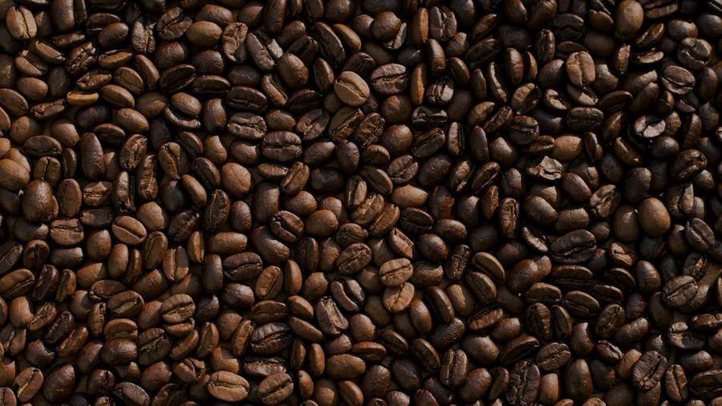
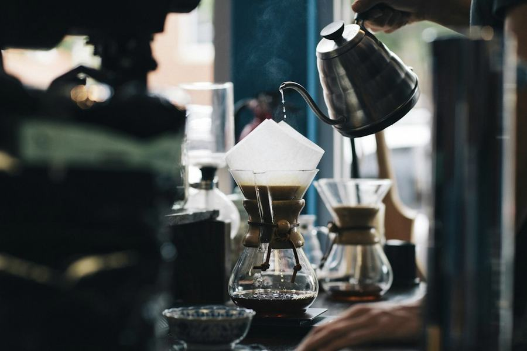

6:30
開店して、最初の一杯
坂の途中で、
六時半に
湯気が立つ。
汐見坂のバス停の前にある、小さなコーヒースタンドです。
品書きを見る
6:34
カフェラテ 480円
深煎りに、
温めた牛乳を。
エスプレッソ2杯分に、牛乳180ml。豆は毎週月曜にここで焼いています。
6:40
冷めないうちに
急がずに、
一杯どうぞ。
朝6時半から昼の2時まで。水曜はお休みです。
道順を見る
下へ読むと注がれます
今日のこと
- 豆はエチオピアのグジ。浅煎りで、杏みたいな香り
- スコーンは11時ごろ。紅茶味もあります
- 雨の日はスタンプ2つ
- マイカップならいつでも30円引き
店主
よく出る品
カフェラテ480模様は日によって変わります。今朝は葉っぱ。
厚切りバタートースト350ゆで卵とドリップを付けると650円。
固めのプリン（店主のおすすめ）380スプーンが立つくらい固いです。
スコーン28011時ごろ焼き上がり。売り切れたら終わり。
豆の量り売り
月曜に焼いて、その週のうちに売り切ります。

汐見ブレンド
ブラジルとコロンビア、中深煎り
100g700
黒糖とくるみの感じ。牛乳を入れてもぼやけません。
エチオピア グジ
グジ地区の水洗式、浅煎り
100g850
杏と紅茶。冷めてからのほうが甘く感じます。
グアテマラ アンティグア
アンティグア地方、中煎り
100g780
カカオとオレンジの皮。毎日飲むならこれ。
挽いてお渡しもできます。ペーパー用、フレンチプレス用など、使う道具を教えてください。
店の一日

- いまここ
開店。一番乗りは、だいたい漁港から帰ってきた人です。
- いまここ
坂下のパン屋から食パンが届きます。トーストはここから。
- いまここ
通勤と通学で一番混む時間。持ち帰りは右の小窓からどうぞ。
- いまここ
落ち着きます。座って飲むならこのあたりから。
- いまここ
朝ごはんはここまで。スコーンが焼き上がります。
- いまここ
ラストオーダー。
閉店。月曜はこのあと、1週間分の豆を焼きます。
道順
珈琲 六時半Rokuji-han Coffee
- 住所
- 架空県汐見坂市坂上町2-6-30
- 営業
- 6:30から14:00まで（ラストオーダー13時半）
- 休み
- 水曜日
- 席
- カウンター6席と、外のベンチがひとつ
- 支払い
- 現金、交通系IC、QRコード
- 犬
- 外のベンチならどうぞ。お水も出します
- 1
汐見坂駅の東口を出て、線路沿いを右へ。
- 2
郵便局の角を左に曲がると、上り坂が始まります。
- 3
4分ほど上るとバス停「坂上二丁目」。その向かいの、青い日よけの店です。
駐車場はありません。自転車はベンチの横に停められます。